When is a Quarter Wave Not a Quarter Wave?
When is a Quarter Wave Not a Quarter Wave? When is a Quarter Wave Not a Quarter Wave?
When is a Quarter Wave Not a Quarter Wave?

The quarter wavelength coax matching section is a common technique for matching two impedances for which an available coax type represents an intermediate value. Figure 1 shows the technique, matching in both cases to a 50-ohm coax line. The 100-ohm load uses 75-ohm coax to effect its match, while the 25-ohm load uses 35-ohm coax for the matching sections.
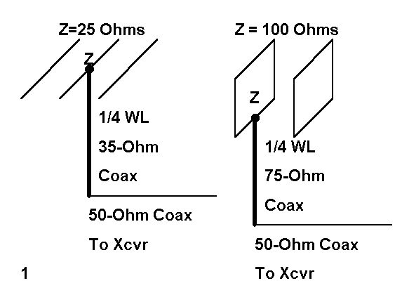
The quarter-wave matching sections are a fourth of a wavelength long at the operating frequency. To calculate the length in feet, we can use the following simple equation:
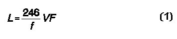
where L is the length in feet, F is the frequency in MHz, and VF is the velocity factor of the transmission line used for the quarter- wavelength section.
Likewise, figuring the impedance relationships is a matter of knowing two out of the three following items: Zload, the load impedance; Zsource, the source or line impedance; and Zo, the characteristic impedance of the matching section. Then we can use the following equations:
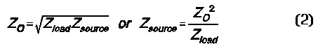
Unfortunately, most folks memorize this formula as an isolated fact, also knowing it applies only where the load and source impedances are purely resistive, with no reactance. They forget two important facts.
1. The quarter wavelength matching section is a special case and condition of coax line. Actually, the impedance--in terms of both resistance and reactance--is constantly changing down the line. At the 1/4 and 1/2 wavelength points, a resistive load will show up as a resistive impedance. At the 1/4 wavelength point, it will be a transformed value, while at the 1/2 wavelength point, it will be the original load value.
2. The quarter wavelength section is also a special case of the series matching system pioneered by Frank Regier, OD5CG, a system which has appeared in ARRL antenna publications since the 1970s. A complex system would require a length of the main feedline between the load and the matching section. However, when the load is resistive and the transformation matches the coax rules above, the length of the "in- between" section goes to zero.
If the load has some reactance, you can always perform the Regier calculations to make up a matching section. However, there is--for mild cases where the line SWR is not beyond about 3:1 and the load reactance is only up to 50% of the load resistance--a simpler way to design a quarter wave matching section with no "in-between" section. The technique is simpler if you have the right tools, in this case, some common software. A version of NEC-2, such as NECWin, EZNEC, or NECWires, will be needed for running some frequency sweeps later. A copy of HAMCALC from VE3ERP will provide you with the impedance transformation values along transmission lines. The specific program title is "Transmission Line Performance." Or, Alternatively, you can down load and isolate the GW Basic utility program from the "Voltage, Current, and Impedance Along a Transmission Line" see Index.
The final tool that you need is a slight change of approach: free yourself from the idea that the matching section will be always be 1/4 wavelength long. Figure 2 shows why. It graphs the resistive part of the impedance along a 35-ohm transmission line for a half wavelength (180 electrical degrees). The three loads are as follows: exactly 25- ohms resistive, a complex load of 28 + j15 ohms (inductively reactive), and a complex load of 28 - j15 ohms (capacitively reactive).
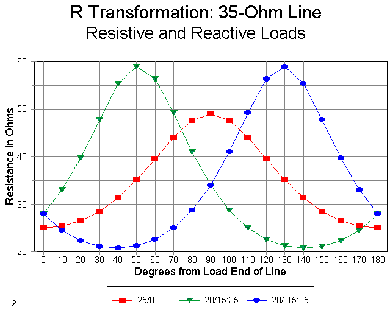
The purely resistive load of 25 ohms become a resistive load of 49 ohms at the 1/4 wavelength point along the 35-ohm line. This matches the short formula exactly, even though the program that calculated this value used the complete complex equation for impedance transformation. (You can find versions of the transformation equations in almost any antenna handbook. The ones used here are for lossless lines, which have more than enough accuracy in view of the short lengths of line used.)
Notice that the inductive load reaches a peak resistive value closer to the load. Although we are not yet positioned to freeze a precise length of 35-ohm cable for the matching section, we know that it will be in the 50-degree length vicinity. Likewise, the capacitive reactance load requires a matching section longer than 90 degrees, more like 130 degrees. Although the precise lengths needed will differ as the load values change, it will be generally true that when transforming load impedances with reactance upward, inductive reactance will call for shorter matching sections and capacitive reactances will call for longer sections.
Notice also that the peak resistance values for the inductive loads are higher than 50 ohms. This is a function of the fact that the reflection coefficient and SWR are higher with these loads than with the 25-ohm load. From this graph, however, we cannot determine either what the SWR is or precisely what the best line length will be. These decisions require that we know what happens to the reactance along the line.
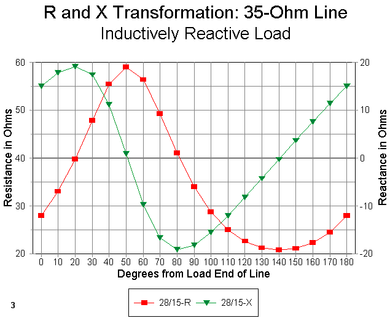
Figure 3 shows both the resistance and reactance (using separate Y-axis scales) for the 28 + j15 ohm (inductively reactive) load. The reactance curve is interesting since it clearly shows that the reactance does not vary in a nice sinusoidal curve. Rather, it ramps, meaning that it changes value slowly for one direction in the curve and more rapidly in the other direction. This fact means that if you must choose a line length where the curve is changing more rapidly, the working bandwidth may shrink for your matching section. Likewise, the higher the reactance--and hence, the higher the SWR--the more rapid the change and the narrower the operating bandwidth for the matching section.
Nevertheless, for modest values of reactance, we can find a satisfactory length of line at which the reactance is close to zero and the resistance is close enough to 50 ohms to give us a perfectly usable match. The length here is 50 degrees.
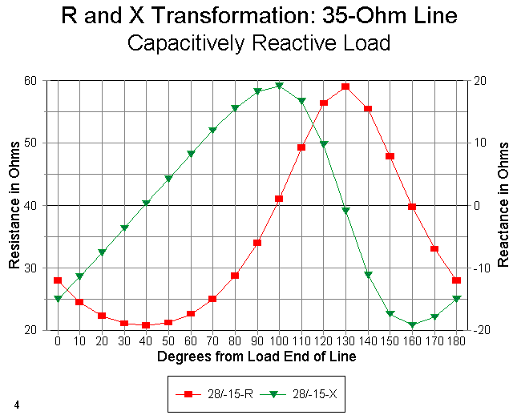
Figure 4 shows the resistance and reactance curves for the 28 - j15 ohm (capacitively reactive) load. Since we are interested in a resistive value close to 50 ohms and a reactance close to zero, we will select a length of about 130 degrees.
Incidentally, we can from these graphs estimate closely the SWR on the line. Select the point where the reactance is zero. Now determine the resistance as closely as the graph will permit. The SWR is simply the resistance divided by the 35-ohm line impedance--or that line impedance divided by the resistance: whichever way yields a number greater than 1. The SWR on the matching section used for both examples so far is under 1.7:1, which ensures a low loss matching system, considering the overall short line lengths.
The graphs are good for illustrating the background of our matching sections. However, the tables produced by the BASIC programs are better for determining the actual line length needed for the match. They let you plug in the load values and the matching line characteristic impedance (Zo) and velocity factor (VF), and frequency. Even though the principles apply at any frequency, all of the examples in this note use a design frequency of 28.5 MHz.
In addition, the graphs are plotted every ten degrees, while the tables provide values every five degrees along the line. Hence, with calculations, you can decide on a line length that will be so close that any difference from calculational precision will make no operational difference at all.
As a sample, here are a few lines from the chart produced for the 28 + j15 ohm load and a phase line having a characteristic impedance (Zo) of 35 ohms and a VF of 0.66 (with voltage and current magnitude and phase data omitted for clarity):
Degrees Feet Meters R(in) X(in) Z mag Z phase 40 2.53 0.77 55.44 11.17 56.55 11.40 45 2.85 0.87 57.94 6.39 58.29 6.29 50 3.16 0.96 59.01 0.91 59.02 0.89 55 3.48 1.06 58.46 -4.66 58.65 -4.55 60 3.80 1.16 56.38 -9.72 57.22 -9.78
From the chart, using the lowest reactance values shown (less than 1 ohm), the matching section for the inductive load should be 3.16' (0.96 m) long. A similar table shows that the matching section for the capacitive load should be 8.23' (2.51 m) long (again, for a 28.5 MHz design situation).
The examples used here are adaptations from a real antenna situation--a phased Yagi I was designing. The 35-ohm cable is RG-82A with a VF of 0.66. However, RG-82A sells for about $3.00 per foot, since it is not a widely used cable in quantity. An alternative cable would be common 75-ohm RG-59 or RG-11, with two lengths in parallel to make up a 37.5- ohm cable.
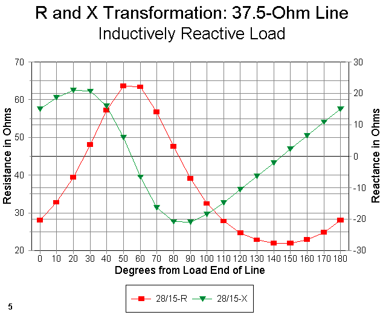
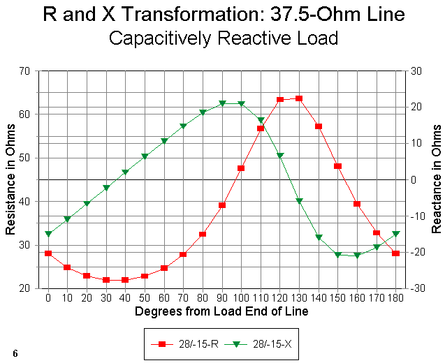
Figure 5 shows the curves for the 28 + j15 ohm load, while Figure 6 shows the curves for the 28 - j15 ohm load, both using the 37.5-ohm matching line. In both cases, we can find satisfactory matching sections (about 55 degrees or 3.5' [1.05 m] and about 125 degrees or 7.9' [2.4 m], respectively), assuming we are not so hyper as to demand a perfect 50-ohm match. In fact, it will not be the lowest SWR that is of greatest concern, but the overall SWR curve that will interest us most.
Before we turn to the SWR curve, let's look at the use of 70 or 75 ohm cable as a match between 50-ohm line and resistive loads of about 100 ohms. (We shall remain at 28.5 MHz throughout this section.) The 70- ohm line will match a 100-ohm resistive load to 50-ohm line almost perfectly, while--as shown in Figure 7--the 75-ohm matching section is not sufficiently far off the mark to make us worry for a second.
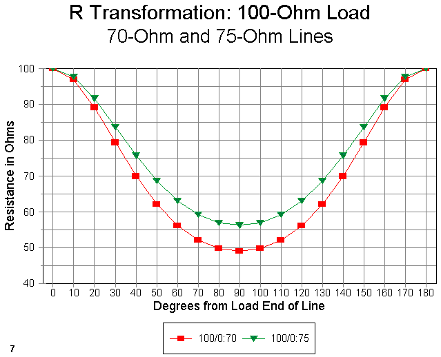
But what about reactive loads? Let's set up an inductive load of 85 + j25 ohms. In the downward transformation shown in Figure 8, we see the opposite effect of transforming upward: now the inductive load calls for a matching section longer than 90 degrees. For this example, the length is 120 degrees. From the tables, we can read 7.59' or 2.31 meters.
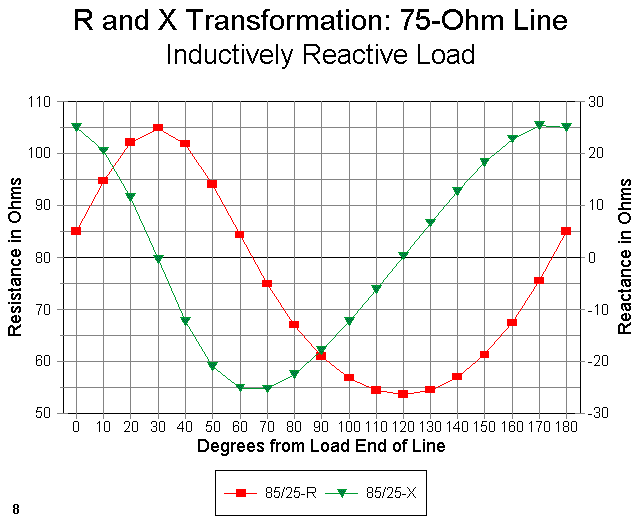
As we might expect, and as Figure 9 shows, a capacitive load of 28 - j25 ohms calls for a line length that is shorter than 90 degrees to effect the match, in this case, about 60 degrees, or 3.80', which is 1.16 meters. As with the earlier up-transformation cases, we can use the point where the reactance is zero to calculate the approximate SWR on the matching section line (about 1.4:1).
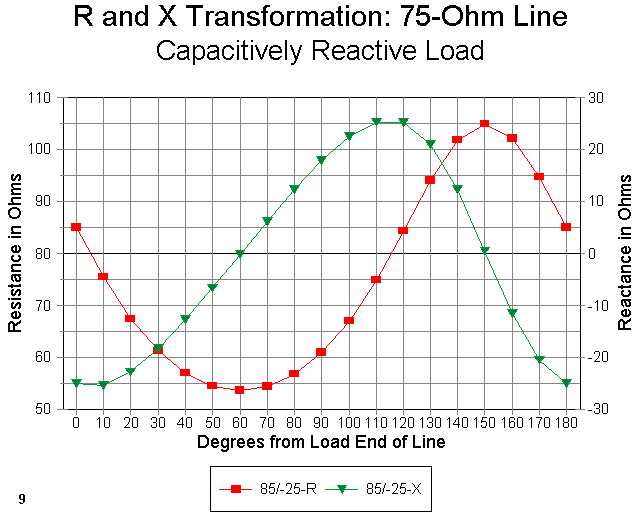
To demonstrate what happens at slightly higher SWR levels, let's take a quick look at loads of 100 + j50 ohms and 100 - j50 ohms in Figures 10 and 11. Notice the steeper reactance curves with higher peak values, both of which facts promise a narrower operating bandwidth. Notice also that even though the load resistance is 100 ohms, the transformation does not hit 50 ohms where the reactance crosses the zero line. Rather, the transformed value is close to 40 ohms (a 1.25:1 SWR for the 50-ohm main feedline to which we are matching).
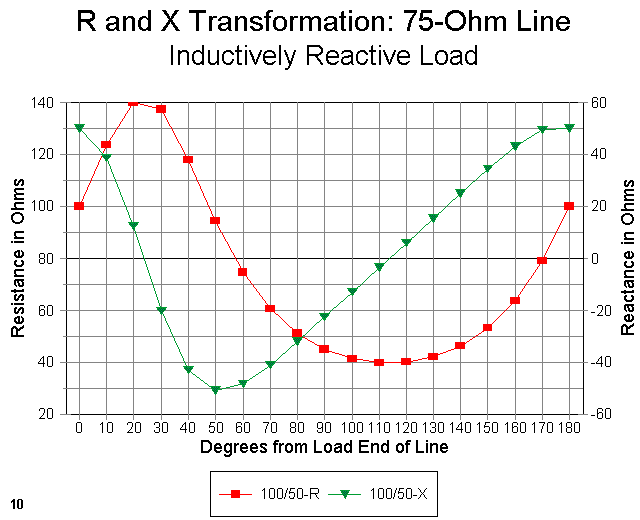
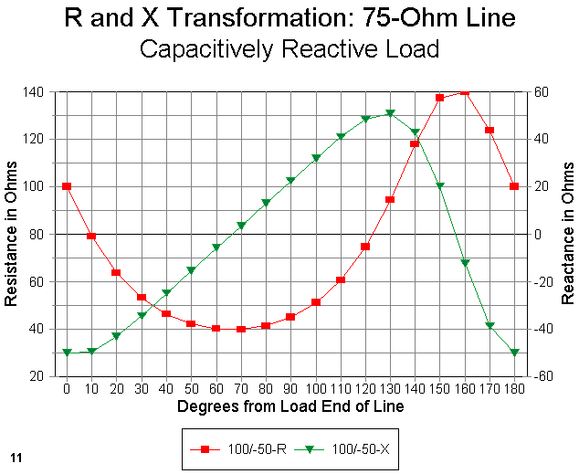
For the comparison, Figure 12 shows just the resistance curves for the 85 + j25 ohm and the 100 + j50 ohm loads. Notice that even the resistive part of the impedance does not form a sine wave curve for either case. Rather, peaks occur over a smaller portion of the total line length, while nulls are spread out over a longer portion of the total line length. The higher the reactance, the higher the peak and the smaller portion of the line to which it is confined.
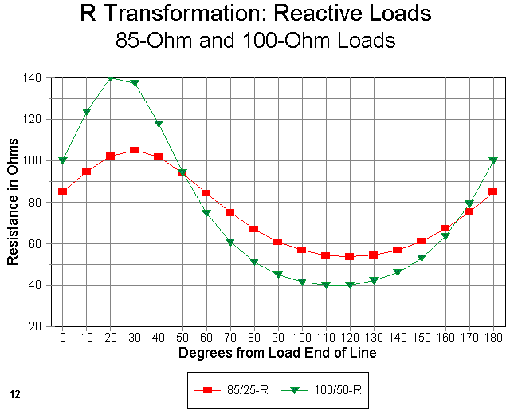
So far, we have restricted ourselves to a specific design frequency, 28.5 MHz. However, in the examples, I was interested not in one frequency, but in the entire first MHz of the 10-meter band. Hence, a 1:1 SWR at 28.5 MHz was less interesting than getting a satisfactory SWR curve from 28 to 29 MHz.
The rates of resistance and reactance change of the cable away from the design center frequency will affect the operating bandwidth of the match. Likewise, the characteristics of the antenna that create feedpoint impedance changes over that same frequency range will also play a role in the effective operating band width of the matching section. Let's look at two examples and see what happens.
The phased Yagi used in the upward transformation through a 35-ohm matching section presented a load of 28 + j15 ohms. Using NEC-2, I added the matching section to the model. The technique, for those who have not used it, is simple. I created a one-segment thin (#14) wire a large distance from the antenna proper. Since NEC transmission lines need a terminating point, I had to have the wire, which became the new antenna feed point. However, the actual transmission line is only mathematical and not physical in the model. Hence, in specifying the line properties, I also specified its length. This is the length used in NEC calculations, and the actual location of the terminating wire is irrelevant, except that it pays to keep it well clear of the antenna fields.
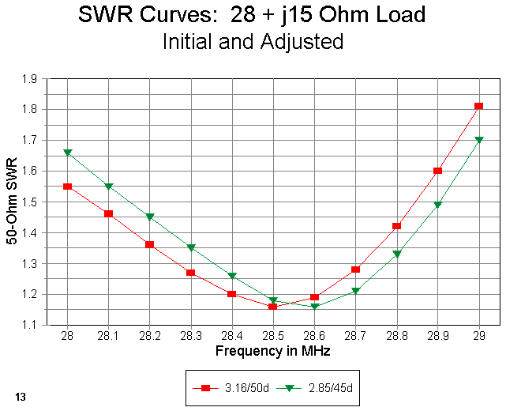
Figure 13 shows a pair of SWR curves. One is the curve for the line length chosen on the basis of initial considerations from the tables (3.16' or 0.96 m). It is quite non-symmetrical, rising much more rapidly above the design frequency than below it. So I adjusted the matching section length, shortening it so that it provided the minimum SWR at about 28.6 MHz. Now the curve provides roughly equal SWR values at both ends of the band of interest. The actual length of line is 2.85 feet (0.87 meters), selected by trying several lengths of line until I was satisfied with the SWR curve. Your satisfaction may come with a different curve.
Notice that the SWR never goes to 1:1, but that is unimportant. It is far more important to my design goals that the matching section provides a 1:7 or less SWR over the entire first MHz of 10 meters. Although the effect is not dramatic and no harm would have resulted from leaving the line as first calculated, I let my sense of perfectionism take hold. And, by performing the modeling exercise, I was able to establish well before building that either length would do the job needed.
With feedpoint values of 20 to 30 ohms and either inductive or capacitive reactance, our choices for matching have been few. Gamma matches thrive on inductive reactance, while beta matches prefer capacitive reactance (unless we wish to use a shunt capacitor for the match). Balun-transformer users prefer, for good reasons, to adjust the driven element length to resonance. Whatever the reactance type, we may now add a coax matching section to our list of techniques for feeding low-impedance parasitical arrays. They provide a very low-loss option.
A similar situation exists for quad beams, which typically have feedpoint impedances in the 80 to 120 ohm range, with or without reactance. Figure 14 shows the results of running SWR curves for the 100 + j50 ohm load I encountered with a model quad beam. The longer-than-90-degree matching length of 75-ohm line was just about right to reach the center hub of the antenna assembly.
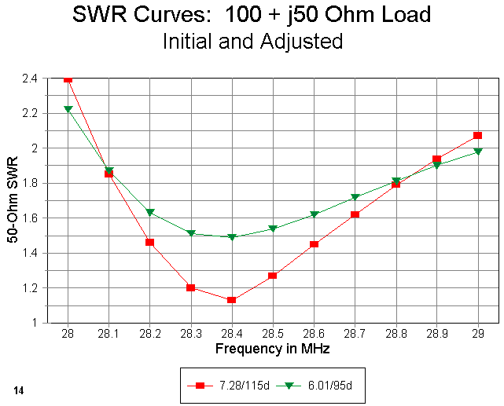
As the graph lines show, once more, I adjusted the matching line length to provide a reasonable symmetrical SWR curve to give me comfortable matching as close to both 28 and 29 MHz as possible. The original design length of 7.28' (2.22 m) became 6.01' (1.83 m) after only a couple of adjustments in the NEC model.
Notice that in this design exercise, I sacrificed the lowest obtainable SWR on the 50-ohm line (about 1.16:1 at 28.4 MHz) in order to spread the 2:1 SWR limits just as wide as they would go with this situation. The 2:1 SWR operating bandwidth almost, but not quite, covers all of the first MHz of 10 meters. (With any significant length of 50-ohm coax from the matching section to the station equipment, the station SWR meter would read less than 2:1 from 28-29 MHz.) The minimum SWR rises to about 1.5:1. In terms of line losses from the coax run to the shack, these values are quite satisfactory in the HF range. However, there are pieces of equipment that begin to cut power in the presence of SWR values well below 2:1: in such cases, my design would not be satisfactory.
All of these calculations can be worked out on Smith Charts, when supplemented by a pocket calculator. The advantages of the techniques shown here are several. First, the transmission line tables show the full range of resistance and reactance values for a 180-degree length of line. Hence, they actually suggest from the numbers whether or not a single series matching section is a good way to go in matching the load to the line. Second, the technique is quick, since tables based on a modeled or measure feedpoint impedance take only a moment to generate from the BASIC program, and the frequency sweeps to obtain the desired SWR curve take only moments longer. In the latter case, one can run through some intuitive moves with respect to matching section length without further calculations and see the results almost instantly on most programs.
Whichever technique you use to develop the numbers for a single series matching section, do not forget that such a section may be a good route to a simple, low-loss match, even when the load has some reactance and the required match-line length is not a pure quarter wavelength.

Updated 2-20-98, 7-15-99. © L. B. Cebik, W4RNL. Data may be used for personal purposes, but may not be reproduced for publication in print or any other medium without permission of the author. A version of this item has appeared in AntenneX.